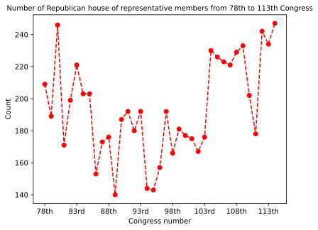

pip install -r requirements.txtERROR: Could not open requirements file: [Errno 2] No such file or directory: 'requirements.txt'
Note: you may need to restart the kernel to use updated packages.This dataset was scrapped from Party Divisions of the House of Representatives, 1789 to Present. I first grabbed the whole website with BeautifulSoup API and parsed it. Then I found the table headers and stored them and made a list of what final headers I need for my final data frame. In the next step, I went through the rows of the table, then I stored the rows that its Congress was after 1945. Then I dropped the renaming rows. I also, broke the “Congress (Years)” into two different columns the Congress years and the Congress number as they are two separate things. I converted the data type of Democrat and Republican columns from object to string as they are needed for comparison later on.
For the third dataset, I used the data provided by the Federal Reserve bank of St Louis. I made a new column of years as the year is going to be a metric we are going to be comparing the results by, but the recession data is measured quarterly. So if there is a recession in part of the year, I just assumed that year has a recession in my research. I also renamed the ‘JHDUSRGDPBR’ column to ‘IsRecession’ as it was more of a appropriate label.
I used left merge on the second dataset and the first dataset so that I could find out what scientists testified at what Congress. To do this task, I made two different data frames and matches the scientists with whether they appeared in the first or second year of Congress’s term for its testimony and then combined the two data frames into one concat function. Thus I ended up with a dataset that has each scientist with the congress term they testified and the Congressional information of that Congress along with the original information of that testimony.
In the explanatory section, I mostly tried to look at what each dataset tells me. I made a bar chart of what type of social scientist appeared the most, which made me curious why there is such a huge skew towards Economists and caused me to find another dataset for further research. I also checked, the political trend of Congress to see how has the political dynamic of the United States changed over time for a better perspective. Later on, I tried to see if there is any relationship between political parties and the number of testimonies with a pie chart. Then made a line chart of the total number of testimonies by year to see if I see a trend that I could dig deeper on. While overall we have an increase and then decrease in the number of testimonies before Congress, Congress’s attitude toward different disciplines might be different which is why I decided to analyze by field in my analysis section. Then I did a text and network analysis to figure out what the issues Congress mostly holds hearings over as they will explain the heavy skew toward economists and figure out what are the issues Congress is mostly focused on.
#First Dataset - Social scientist's Congressional testimony
df_testimony = pd.read_csv('https://osf.io/download/asdp8/')
df_testimony.to_csv('SocialScientistsTestiomonyDataset.csv')
df_testimony.head()| Unnamed: 0 | hearing_id | year | date_begin | date_end | witness_name | witness_affiliation | discipline1 | discipline2 | discipline3 | ... | thinktank1 | thinktank2 | full_committee1 | sub_committee1 | full_committee2 | sub_committee2 | title_description | filter | HID | univ_aff | |
|---|---|---|---|---|---|---|---|---|---|---|---|---|---|---|---|---|---|---|---|---|---|
| 0 | 1 | HRG-1946-SAP-0010 | 1946 | May 8, 1946 | Jun. 3, 1946 | howard grieves | chief economist, census bur | Economist | NaN | NaN | ... | NaN | NaN | committee on appropriations. senate | NaN | NaN | NaN | departments of state, justice, commerce, and t... | 1 | 20171 | 0 |
| 1 | 2 | HRG-1947-SAP-0013 | 1947 | May 26, 1947 | Jun. 16, 1947 | philip hauser | dep dir, bur of census | Sociologist | NaN | NaN | ... | NaN | NaN | committee on appropriations. senate | NaN | NaN | NaN | departments of state, justice, commerce, and t... | 1 | 20655 | 0 |
| 2 | 3 | HRG-1947-MMF-0018 | 1947 | Jun. 27, 1947 | Jul. 16, 1947 | j. ely | chief, foreign trade div, bur of census, comme... | Economist | NaN | NaN | ... | NaN | NaN | committee on merchant marine and fisheries. house | NaN | NaN | NaN | use of american-owned tankers transporting gas... | 1 | 21081 | 0 |
| 3 | 4 | HRG-1948-EXD-0008 | 1948 | Mar. 24, 1948 | Apr. 15, 1948 | j. ely | chief, foreign trade div, census bur, commerce... | Economist | NaN | NaN | ... | NaN | NaN | committee on expenditures in executive departm... | subcommittee on surplus property | NaN | NaN | investigation, disposition of surplus property... | 1 | 21584 | 0 |
| 4 | 5 | HRG-1949-SAP-0018 | 1949 | Aug. 31, 1949 | Sep. 15, 1949 | philip hauser | act dir, bur of census | Sociologist | NaN | NaN | ... | NaN | NaN | committee on appropriations. senate | NaN | NaN | NaN | supplemental appropriation bill for 1950 | 1 | 22017 | 0 |
5 rows × 29 columns
df_testimony.tail()| Unnamed: 0 | hearing_id | year | date_begin | date_end | witness_name | witness_affiliation | discipline1 | discipline2 | discipline3 | ... | thinktank1 | thinktank2 | full_committee1 | sub_committee1 | full_committee2 | sub_committee2 | title_description | filter | HID | univ_aff | |
|---|---|---|---|---|---|---|---|---|---|---|---|---|---|---|---|---|---|---|---|---|---|
| 15477 | 15478 | H37-20160907-01 | 2016 | Sep. 7, 2016 | Sep. 7, 2016 | jeffrey lacker | federal reserve bank, richmond | Economist | NaN | NaN | ... | NaN | NaN | committee on financial services. house | subcommittee on monetary policy and trade | NaN | NaN | federal reserve districts: governance, monetar... | 1 | 118160 | 0 |
| 15478 | 15479 | H37-20160907-01 | 2016 | Sep. 7, 2016 | Sep. 7, 2016 | william spriggs | afl-cio and professor, economics , howard univ... | Economist | NaN | NaN | ... | NaN | NaN | committee on financial services. house | subcommittee on monetary policy and trade | NaN | NaN | federal reserve districts: governance, monetar... | 1 | 118160 | 1 |
| 15479 | 15480 | S43-20160922-01 | 2016 | Sep. 22, 2016 | Sep. 22, 2016 | susan collins | r -me | Economist | NaN | NaN | ... | NaN | NaN | committee on health, education, labor, and pen... | NaN | NaN | NaN | cosmetic development and safety | 1 | 118162 | 0 |
| 15480 | 15481 | S18-20160301-03 | 2016 | Mar. 1, 2016 | Mar. 1, 2016 | robert johansson | usda | Economist | NaN | NaN | ... | NaN | NaN | committee on appropriations. senate | subcommittee on agriculture, rural development... | NaN | NaN | farm economy | 1 | 118214 | 0 |
| 15481 | 15482 | S18-20160301-03 | 2016 | Mar. 1, 2016 | Mar. 1, 2016 | nathan kauffman | omaha branch executive , federal reserve bank ... | Economist | NaN | NaN | ... | NaN | NaN | committee on appropriations. senate | subcommittee on agriculture, rural development... | NaN | NaN | farm economy | 1 | 118214 | 0 |
5 rows × 29 columns
#Second Dataset - Congress's historical data
#Scrapping from the website
response = requests.get('https://history.house.gov/Institution/Party-Divisions/Party-Divisions/')
html_string = response.text
document = BeautifulSoup(html_string, "html.parser")#Getting the Table Headers from the website
columns_headers = []
table = document.find('table')
table_header = table.find("thead")
for header in table_header.find_all("th"):
columns_headers.append(header.text.strip())
print(columns_headers)['Congress (Years)', '# of House Seats', 'Pro-Administration', 'Anti-Administration', 'Other', 'Del./Res.']#Fixing the headers for the dataframe
#Since I limited my dataframe to years that Democrats and Republicans were the dominated parties, I changed the headers for them
columns_headers[2] = "Democrats"
columns_headers[3] = "Republicans"
columns_headers.append("Year")
columns_headers.append("Congress")#Reading through the tables body on the website and only grabbing data for years after 1945
congress_breakdown_rows = []
#Table body
table_body = table.find("tbody")
add_row_permission = False
congress_counter = 0
for row in table_body.find_all("tr"):
table_row = []
first_cell = True
congress = ""
year = ""
for cell in row.find_all("td"):
if(first_cell):
first_cell_list = cell.text.strip().split(" ")
congress = first_cell_list[0]
year = first_cell_list[1]
if("1945" in year):
add_row_permission = True
first_cell = False
if(add_row_permission):
table_row.append(cell.text.strip())
if(add_row_permission):
table_row.append(year)
table_row.append(congress)
congress_breakdown_rows.append(table_row)
df_congress_breakdown = pd.DataFrame(congress_breakdown_rows, columns=columns_headers)df_congress_breakdown.head()| Congress (Years) | # of House Seats | Democrats | Republicans | Other | Del./Res. | Year | Congress | |
|---|---|---|---|---|---|---|---|---|
| 0 | 78th (1943–1945) | 435 | 222 | 209 | Progressives (2),Farmer-Labor (1),American Lab... | 2/2 | (1943–1945) | 78th |
| 1 | 79th (1945–1947) | 435 | 244 | 189 | Progressives (1),American Labor (1) | 2/2 | (1945–1947) | 79th |
| 2 | 80th (1947–1949) | 435 | 188 | 246 | American Labor (1) | 2/1 | (1947–1949) | 80th |
| 3 | 81st (1949–1951) | 435 | 263 | 171 | American Labor (1) | 2/1 | (1949–1951) | 81st |
| 4 | 82nd (1951–1953) | 435 | 235 | 199 | Independent (1) | 2/1 | (1951–1953) | 82nd |
df_congress_breakdown.tail()| Congress (Years) | # of House Seats | Democrats | Republicans | Other | Del./Res. | Year | Congress | |
|---|---|---|---|---|---|---|---|---|
| 39 | 114th (2015–2017) | 435 | 188 | 247 | 0 | 5/1 | (2015–2017) | 114th |
| 40 | 115th (2017–2019) | 435 | 194 | 241 | 0 | 5/1 | (2017–2019) | 115th |
| 41 | 116th (2019-2021) | 4354 | 235 | 199 | 0 | 5/1 | (2019-2021) | 116th |
| 42 | 117th (2021–2023) | 4355 | 222 | 212 | 0 | 5/1 | (2021–2023) | 117th |
| 43 | 118th (2023–2025) | 435 | 213 | 222 | 0 | 5/1 | (2023–2025) | 118th |
df_congress_breakdown.drop(df_congress_breakdown.tail(4).index,
inplace = True)df_congress_breakdown.columnsIndex(['Congress (Years)', '# of House Seats', 'Democrats', 'Republicans',
'Other', 'Del./Res.', 'Year', 'Congress'],
dtype='object')df_congress_breakdown.dropna(how='any', inplace=True)display(df_congress_breakdown)| Congress (Years) | # of House Seats | Democrats | Republicans | Other | Del./Res. | Year | Congress | |
|---|---|---|---|---|---|---|---|---|
| 0 | 78th (1943–1945) | 435 | 222 | 209 | Progressives (2),Farmer-Labor (1),American Lab... | 2/2 | (1943–1945) | 78th |
| 1 | 79th (1945–1947) | 435 | 244 | 189 | Progressives (1),American Labor (1) | 2/2 | (1945–1947) | 79th |
| 2 | 80th (1947–1949) | 435 | 188 | 246 | American Labor (1) | 2/1 | (1947–1949) | 80th |
| 3 | 81st (1949–1951) | 435 | 263 | 171 | American Labor (1) | 2/1 | (1949–1951) | 81st |
| 4 | 82nd (1951–1953) | 435 | 235 | 199 | Independent (1) | 2/1 | (1951–1953) | 82nd |
| 5 | 83rd (1953–1955) | 435 | 213 | 221 | Independent (1) | 2/1 | (1953–1955) | 83rd |
| 6 | 84th (1955–1957) | 435 | 232 | 203 | 0 | 2/1 | (1955–1957) | 84th |
| 8 | 85th (1957–1959) | 435 | 232 | 203 | 0 | 2/1 | (1957–1959) | 85th |
| 9 | 86th (1959–1961) | 4363 | 282 | 153 | Independent Democrat (1) | 1/1 | (1959–1961) | 86th |
| 10 | 87th (1961–1963) | 437 | 264 | 173 | 0 | 0/1 | (1961–1963) | 87th |
| 11 | 88th (1963–1965) | 435 | 258 | 176 | Independent Democrat (1) | 0/1 | (1963–1965) | 88th |
| 12 | 89th (1965–1967) | 435 | 295 | 140 | 0 | 0/1 | (1965–1967) | 89th |
| 13 | 90th (1967–1969) | 435 | 248 | 187 | 0 | 0/1 | (1967–1969) | 90th |
| 14 | 91st (1969–1971) | 435 | 243 | 192 | 0 | 0/1 | (1969–1971) | 91st |
| 15 | 92nd (1971–1973) | 435 | 255 | 180 | 0 | 1/1 | (1971–1973) | 92nd |
| 16 | 93rd (1973–1975) | 435 | 243 | 192 | 0 | 3/1 | (1973–1975) | 93rd |
| 17 | 94th (1975–1977) | 435 | 291 | 144 | 0 | 3/1 | (1975–1977) | 94th |
| 19 | 95th (1977–1979) | 435 | 292 | 143 | 0 | 3/1 | (1977–1979) | 95th |
| 20 | 96th (1979–1981) | 435 | 278 | 157 | 0 | 3/1 | (1979–1981) | 96th |
| 21 | 97th (1981–1983) | 435 | 243 | 192 | 0 | 4/1 | (1981–1983) | 97th |
| 22 | 98th (1983–1985) | 435 | 269 | 166 | 0 | 4/1 | (1983–1985) | 98th |
| 23 | 99th (1985–1987) | 435 | 254 | 181 | 0 | 4/1 | (1985–1987) | 99th |
| 24 | 100th (1987–1989) | 435 | 258 | 177 | 0 | 4/1 | (1987–1989) | 100th |
| 25 | 101st (1989–1991) | 435 | 260 | 175 | 0 | 4/1 | (1989–1991) | 101st |
| 26 | 102nd (1991–1993) | 435 | 267 | 167 | Independent (1) | 4/1 | (1991–1993) | 102nd |
| 27 | 103rd (1993–1995) | 435 | 258 | 176 | Independent (1) | 4/1 | (1993–1995) | 103rd |
| 28 | 104th (1995–1997) | 435 | 204 | 230 | Independent (1) | 4/1 | (1995–1997) | 104th |
| 30 | 105th (1997–1999) | 435 | 207 | 226 | Independent (2) | 4/1 | (1997–1999) | 105th |
| 31 | 106th (1999–2001) | 435 | 211 | 223 | Independent (1) | 4/1 | (1999–2001) | 106th |
| 32 | 107th (2001–2003) | 435 | 212 | 221 | Independent (2) | 4/1 | (2001–2003) | 107th |
| 33 | 108th (2003–2005) | 435 | 205 | 229 | Independent (1) | 4/1 | (2003–2005) | 108th |
| 34 | 109th (2005–2007) | 435 | 201 | 233 | Independent (1) | 4/1 | (2005–2007) | 109th |
| 35 | 110th (2007–2009) | 435 | 233 | 202 | 0 | 4/1 | (2007–2009) | 110th |
| 36 | 111th (2009–2011) | 435 | 257 | 178 | 0 | 5/1 | (2009–2011) | 111th |
| 37 | 112th (2011–2013) | 435 | 193 | 242 | 0 | 5/1 | (2011–2013) | 112th |
| 38 | 113th (2013–2015) | 435 | 201 | 234 | 0 | 5/1 | (2013–2015) | 113th |
| 39 | 114th (2015–2017) | 435 | 188 | 247 | 0 | 5/1 | (2015–2017) | 114th |
df_congress_breakdown.to_csv('CongressDataset.csv')print(df_congress_breakdown.dtypes)Congress (Years) object
# of House Seats object
Democrats object
Republicans object
Other object
Del./Res. object
Year object
Congress object
dtype: objectdf_congress_breakdown['Democrats'] = df_congress_breakdown['Democrats'].astype(int)
df_congress_breakdown['Republicans'] = df_congress_breakdown['Republicans'].astype(int)#Third Dataset - Recession Data from 1967 - Now
df_recession = pd.read_csv('https://fred.stlouisfed.org/graph/fredgraph.csv?bgcolor=%23e1e9f0&chart_type=line&drp=0&fo=open%20sans&graph_bgcolor=%23ffffff&height=450&mode=fred&recession_bars=off&txtcolor=%23444444&ts=12&tts=12&width=1318&nt=0&thu=0&trc=0&show_legend=yes&show_axis_titles=yes&show_tooltip=yes&id=JHDUSRGDPBR&scale=left&cosd=1967-10-01&coed=2022-07-01&line_color=%234572a7&link_values=false&line_style=solid&mark_type=none&mw=3&lw=2&ost=-99999&oet=99999&mma=0&fml=a&fq=Quarterly&fam=avg&fgst=lin&fgsnd=2020-02-01&line_index=1&transformation=lin&vintage_date=2023-03-18&revision_date=2023-03-18&nd=1967-10-01')
df_recession.to_csv('USRecessionData.csv')
df_recession["Year"] = df_recession["DATE"].str[:4]
df_recession = df_recession.rename(columns={'JHDUSRGDPBR': 'IsRecession'})
display(df_recession)| DATE | IsRecession | Year | |
|---|---|---|---|
| 0 | 1967-10-01 | 0.0 | 1967 |
| 1 | 1968-01-01 | 0.0 | 1968 |
| 2 | 1968-04-01 | 0.0 | 1968 |
| 3 | 1968-07-01 | 0.0 | 1968 |
| 4 | 1968-10-01 | 0.0 | 1968 |
| ... | ... | ... | ... |
| 215 | 2021-07-01 | 0.0 | 2021 |
| 216 | 2021-10-01 | 0.0 | 2021 |
| 217 | 2022-01-01 | 0.0 | 2022 |
| 218 | 2022-04-01 | 0.0 | 2022 |
| 219 | 2022-07-01 | 0.0 | 2022 |
220 rows × 3 columns
# Merging the the two datasets
year1 = []
year2 = []
for ind in df_congress_breakdown.index:
if("2021" in df_congress_breakdown['Year'][ind] and "2019" in df_congress_breakdown['Year'][ind]):
years = df_congress_breakdown['Year'][ind].split("-")
else:
years = df_congress_breakdown['Year'][ind].split("–")
year1.append(int(years[0][1:5]))
year2.append(int(years[1][0:4])-1)
df_congress_breakdown['Year_1'] = year1
df_congress_breakdown['Year_2'] = year2
df_testimony['Year_1'] = df_testimony["year"]
df_testimony['Year_2'] = df_testimony["year"]
new_df_1 = pd.merge(df_testimony,df_congress_breakdown , how='left', left_on=['Year_1'], right_on = ['Year_1'])
new_df_2 = pd.merge( df_testimony,df_congress_breakdown , how='left', left_on=['Year_2'], right_on = ['Year_2'])
frames = [new_df_1, new_df_2]
df_merged = pd.concat(frames)
display(df_merged)
df_merged.to_csv('MergedDataset.csv')| Unnamed: 0 | hearing_id | year | date_begin | date_end | witness_name | witness_affiliation | discipline1 | discipline2 | discipline3 | ... | Democrats | Republicans | Other | Del./Res. | Year | Congress | Year_2_y | Year_1_x | Year_2 | Year_1_y | |
|---|---|---|---|---|---|---|---|---|---|---|---|---|---|---|---|---|---|---|---|---|---|
| 0 | 1 | HRG-1946-SAP-0010 | 1946 | May 8, 1946 | Jun. 3, 1946 | howard grieves | chief economist, census bur | Economist | NaN | NaN | ... | NaN | NaN | NaN | NaN | NaN | NaN | NaN | NaN | NaN | NaN |
| 1 | 2 | HRG-1947-SAP-0013 | 1947 | May 26, 1947 | Jun. 16, 1947 | philip hauser | dep dir, bur of census | Sociologist | NaN | NaN | ... | 188.0 | 246.0 | American Labor (1) | 2/1 | (1947–1949) | 80th | 1948.0 | NaN | NaN | NaN |
| 2 | 3 | HRG-1947-MMF-0018 | 1947 | Jun. 27, 1947 | Jul. 16, 1947 | j. ely | chief, foreign trade div, bur of census, comme... | Economist | NaN | NaN | ... | 188.0 | 246.0 | American Labor (1) | 2/1 | (1947–1949) | 80th | 1948.0 | NaN | NaN | NaN |
| 3 | 4 | HRG-1948-EXD-0008 | 1948 | Mar. 24, 1948 | Apr. 15, 1948 | j. ely | chief, foreign trade div, census bur, commerce... | Economist | NaN | NaN | ... | NaN | NaN | NaN | NaN | NaN | NaN | NaN | NaN | NaN | NaN |
| 4 | 5 | HRG-1949-SAP-0018 | 1949 | Aug. 31, 1949 | Sep. 15, 1949 | philip hauser | act dir, bur of census | Sociologist | NaN | NaN | ... | 263.0 | 171.0 | American Labor (1) | 2/1 | (1949–1951) | 81st | 1950.0 | NaN | NaN | NaN |
| ... | ... | ... | ... | ... | ... | ... | ... | ... | ... | ... | ... | ... | ... | ... | ... | ... | ... | ... | ... | ... | ... |
| 15477 | 15478 | H37-20160907-01 | 2016 | Sep. 7, 2016 | Sep. 7, 2016 | jeffrey lacker | federal reserve bank, richmond | Economist | NaN | NaN | ... | 188.0 | 247.0 | 0 | 5/1 | (2015–2017) | 114th | NaN | 2016.0 | 2016.0 | 2015.0 |
| 15478 | 15479 | H37-20160907-01 | 2016 | Sep. 7, 2016 | Sep. 7, 2016 | william spriggs | afl-cio and professor, economics , howard univ... | Economist | NaN | NaN | ... | 188.0 | 247.0 | 0 | 5/1 | (2015–2017) | 114th | NaN | 2016.0 | 2016.0 | 2015.0 |
| 15479 | 15480 | S43-20160922-01 | 2016 | Sep. 22, 2016 | Sep. 22, 2016 | susan collins | r -me | Economist | NaN | NaN | ... | 188.0 | 247.0 | 0 | 5/1 | (2015–2017) | 114th | NaN | 2016.0 | 2016.0 | 2015.0 |
| 15480 | 15481 | S18-20160301-03 | 2016 | Mar. 1, 2016 | Mar. 1, 2016 | robert johansson | usda | Economist | NaN | NaN | ... | 188.0 | 247.0 | 0 | 5/1 | (2015–2017) | 114th | NaN | 2016.0 | 2016.0 | 2015.0 |
| 15481 | 15482 | S18-20160301-03 | 2016 | Mar. 1, 2016 | Mar. 1, 2016 | nathan kauffman | omaha branch executive , federal reserve bank ... | Economist | NaN | NaN | ... | 188.0 | 247.0 | 0 | 5/1 | (2015–2017) | 114th | NaN | 2016.0 | 2016.0 | 2015.0 |
30964 rows × 43 columns
#Visualization 1 - Social Scientists breakdown by field
df_testimony_discipline1 = df_testimony.groupby('discipline1')['discipline1'].count()
scientists_type = list(df_testimony_discipline1.keys())
scientists_value = list(df_testimony_discipline1)
print(scientists_type)
print(scientists_value)
plotdata = pd.DataFrame(
{"Social Scientists count": scientists_value},
index=scientists_type)
plotdata.plot(kind="bar",title = "Social scientists count by field")['Anthropologist', 'Economist', 'Political Scientist', 'Psychologist', 'Sociologist']
[305, 10821, 2482, 970, 904]<AxesSubplot: title={'center': 'Social scientists count by field'}>The most common social scientists that appeared before congress are economists, followed by political scientists, psychologists, sociologists, and anthropologists. The economists dominat the testimonies by a large margin.
#Visualization 2 - Number of Democrate Congress members from 78th to 113th Congress
df_congress_breakdown.plot(x = "Congress",y='Democrats', linestyle='--', marker='o', color='b', label='')
plt.title(label="Number of Democrate Congress members from 78th to 113th Congress",
fontsize=10)
plt.xlabel('Congress number')
plt.ylabel('Count')
plt.legend()No artists with labels found to put in legend. Note that artists whose label start with an underscore are ignored when legend() is called with no argument.<matplotlib.legend.Legend at 0x7f84a0926f80>
We have an uptick in the number of Democrate members in the 80-100th Congress, followed by a sharp decline and a slight uptick, and decline again.
#Visualization 3 - Number of Republican Congress members from 78th to 113th Congress
df_congress_breakdown.plot(x = "Congress",y='Republicans', linestyle='--', marker='o', color='r', label='')
plt.title(label="Number of Republican Congress members from 78th to 113th Congress",
fontsize=10)
plt.xlabel('Congress number')
plt.ylabel('Count')
plt.legend()No artists with labels found to put in legend. Note that artists whose label start with an underscore are ignored when legend() is called with no argument.<matplotlib.legend.Legend at 0x7f84a06d3d00>
We have an decline in the number of Republican members in the 80-100th Congress, followed an increase.
#Visualization 4 - Scientists by year
df_testimony_appearence_count_year = df_testimony.groupby('year')['year'].count()
#print(df_testimony_appearence_count_year)
x = list(df_testimony_appearence_count_year.keys())
y = list(df_testimony_appearence_count_year)
plt.title(label="Number of social scientists testiominal by year ",
fontsize=10)
plt.xlabel('Year')
plt.ylabel('Count')
plt.plot(x,y,'g')
As we can we have an overall increase in the number of testimonies from the 1950s to the 1980s, but then we have a continuous downward trend from then on.
appearence_by_scientists = df_testimony.groupby('witness_name')['witness_name'].count().sort_values(ascending=False)
print(appearence_by_scientists)
appearence_by_scientists.describe()witness_name
alan greenspan 189
alice rivlin 145
daniel moynihan 142
douglas holtz-eakin 106
robert reischauer 97
...
leo pasvolsky 1
donald redfoot 1
donald pierce 1
donald parsons 1
joseph mulholland 1
Name: witness_name, Length: 5457, dtype: int64count 5457.000000
mean 2.837090
std 6.624598
min 1.000000
25% 1.000000
50% 1.000000
75% 2.000000
max 189.000000
Name: witness_name, dtype: float64There seem to be several famous scientists who testified alot such as Alan Greenspan and Alice Rivlin, but if have look at the statistics most scientists have only testified at most once.
#Visualization 5 - Scientists by year
plt.title(label="Number of social scientists testiominals histogram",
fontsize=10)
plt.xlabel('Number of appearances')
plt.ylabel('Count')
plt.hist(appearence_by_scientists,bins=50, color='green')(array([4.795e+03, 3.560e+02, 1.290e+02, 5.000e+01, 2.900e+01, 2.600e+01,
1.700e+01, 9.000e+00, 1.100e+01, 9.000e+00, 2.000e+00, 5.000e+00,
2.000e+00, 2.000e+00, 1.000e+00, 2.000e+00, 2.000e+00, 2.000e+00,
0.000e+00, 0.000e+00, 1.000e+00, 1.000e+00, 0.000e+00, 0.000e+00,
1.000e+00, 1.000e+00, 0.000e+00, 1.000e+00, 0.000e+00, 0.000e+00,
0.000e+00, 0.000e+00, 0.000e+00, 0.000e+00, 0.000e+00, 0.000e+00,
0.000e+00, 1.000e+00, 1.000e+00, 0.000e+00, 0.000e+00, 0.000e+00,
0.000e+00, 0.000e+00, 0.000e+00, 0.000e+00, 0.000e+00, 0.000e+00,
0.000e+00, 1.000e+00]),
array([ 1. , 4.76, 8.52, 12.28, 16.04, 19.8 , 23.56, 27.32,
31.08, 34.84, 38.6 , 42.36, 46.12, 49.88, 53.64, 57.4 ,
61.16, 64.92, 68.68, 72.44, 76.2 , 79.96, 83.72, 87.48,
91.24, 95. , 98.76, 102.52, 106.28, 110.04, 113.8 , 117.56,
121.32, 125.08, 128.84, 132.6 , 136.36, 140.12, 143.88, 147.64,
151.4 , 155.16, 158.92, 162.68, 166.44, 170.2 , 173.96, 177.72,
181.48, 185.24, 189. ]),
<BarContainer object of 50 artists>)As the histogram show there are barely any scientists who testied more than 25 times and the majority(over 4000 scientists)only testied once or twice.
#Visualization 6 - Box plot for scientists apperance by year
scientists_by_year = df_merged.groupby('year')['year'].count()
plt.title("Box plot of scientists apperance by year ")
plt.ylabel('Count')
scientists_by_year.plot(kind='box')
print("Mean: "+ str(scientists_by_year.mean()))
print("Median: "+ str(scientists_by_year.median()))
print("Standard deviation: "+ str(scientists_by_year.std()))
print("Max: "+ str(scientists_by_year.max()))
print("Min: "+ str(scientists_by_year.min()))Mean: 436.11267605633805
Median: 404.0
Standard deviation: 211.1096904655272
Max: 928
Min: 60
As we can on average there are 200 scientists testimonies per year at Congress or about one per working per day. The standard deviation is 211 which is kind of huge and shows the amount of variability in the number of testimonies. There is also a significant difference between the max(928) and the min(60) number of testimonies.
#Visualization 1 - Number of scientists appearenace by Congress - year
scientists_by_congress = df_merged.groupby('Congress')['Congress'].count()
x_unsorted = list(scientists_by_congress.keys())
y_unsorted = list(scientists_by_congress)
x = x_unsorted[15:]+x_unsorted[0:15]
y = y_unsorted[15:]+y_unsorted[0:15]
plt.figure(figsize=(10,10))
plt.title("Number of Congressial scientists testiomainals",fontsize = 10)
plt.ylabel('Count',fontsize = 10)
plt.xlabel('Congress Number',fontsize = 10)
plt.xticks(fontsize = 3)
plt.plot(x,y,'g')
scientists_by_congress = df_merged.groupby('Year')['Year'].count()
x = list(scientists_by_congress.keys())
y = list(scientists_by_congress)
plt.figure(figsize=(12,10))
plt.title("Number of scientists testiomainal by Congressional term",fontsize=10)
plt.ylabel('Count',fontsize = 10)
plt.xlabel('Congress Congressional term',fontsize = 10)
plt.xticks(fontsize = 2.5)
plt.plot(x,y,'g')
As we can see from the line chart, the number of testimonies peeked at the 97th Congress(1981-1983), and the lowest number of testimonies happened at the 79th Congress(1945-1947), but this might be because our dataset started counting the number of testimonies from 1946. There is an increase in testimonis during financial crises of 2008, but then it starts to decline again.
#Visualization 2 - Number of scientists appearenace by democrate vs republican dominated congress
df_democrateDominatedCongress = df_merged[df_merged["Democrats"]>df_merged["Republicans"]]
df_republicanDominatedCongress = df_merged[df_merged["Republicans"]>df_merged["Democrats"]]
df_democrateDominatedCongress_count = df_congress_breakdown[df_congress_breakdown["Democrats"]>df_congress_breakdown["Republicans"]]
df_republicanDominatedCongress_count = df_congress_breakdown[df_congress_breakdown["Republicans"]>df_congress_breakdown["Democrats"]]
print("Number of Congresses with Democrat majority: " + str(len(df_democrateDominatedCongress_count)))
print("Number of Congresses with Republican majority: "+str(len(df_republicanDominatedCongress_count)))
#Normalization
y = np.array([len(df_democrateDominatedCongress)/len(df_democrateDominatedCongress_count),
len(df_republicanDominatedCongress)/len(df_republicanDominatedCongress_count)])
mylabels = ["Democrate domiated", "Republican domiated"]
colors = ['#00AEF3', '#E81B23']
plt.title("Comparison of scientists testimonies for Democrat majority vs Republican majority Congress",fontsize = 10)
plt.pie(y, labels = mylabels, autopct='%1.1f%%',labeldistance=1.15, wedgeprops = { 'linewidth' : 1, 'edgecolor' : 'white' }, colors = colors)
plt.show()Number of Congresses with Democrat majority: 26
Number of Congresses with Republican majority: 11
As we can see from the pie chart there does seem to be a small correlation between the number of scientists appearing and wether Congress is Republican or Democrat-dominated. We have had 26 Congress with Democrats since 1946 and 11 Congresses with a Republican majority. After normalization, 53.9% of testimonies happened a Democrate majority Congress and 46.1% with a Republican majority. But this difference isn’t significant enough to state anything conclusively as there may be other factors involved.
scientist_type = df_merged['discipline1'].unique()
print("Social scientists disciplines :"+ str(scientist_type))Social scientists disciplines :['Economist' 'Sociologist' 'Political Scientist' 'Psychologist'
'Anthropologist']#Visualization 3 - Different types of scoial scientist appearenace by year
df_sociologist = df_merged[df_merged["discipline1"] == "Sociologist"]
sociologist_by_year = df_sociologist.groupby('year')['year'].count()
x = list(sociologist_by_year.keys())
y = list(sociologist_by_year)
plt.figure(figsize=(10,10))
plt.plot(x,y, linestyle='--', marker='o', color='r' )
plt.title("Number of Sociologist testiomainal by year",fontsize=10)
plt.ylabel('Sociologist Count',fontsize = 10)
plt.xlabel('Year',fontsize = 10)
plt.show()
We have an uptick in number of sociologists in the 1980s and 1990s, but then we have a continous downward trend. As we the maximum number of sociologists ever appearning before Congress is around 1970’s.
df_economicist = df_merged[df_merged["discipline1"] == "Economist"]
economicist_by_year = df_economicist.groupby('year')['year'].count()
x = list(economicist_by_year.keys())
y = list(economicist_by_year)
plt.figure(figsize=(10,10))
plt.plot(x,y, linestyle='--', marker='o', color='b', label='')
plt.title("Number of Economist testiomainal by year",fontsize=10)
plt.ylabel('Economist Count',fontsize = 10)
plt.xlabel('Year',fontsize = 10)
plt.show()
We have an uptick in the number of economists in the late 1950s and 1960s and most of the 1980s, but then we have a continuous downward trend. But, there is another uptick around the financial crises of 2008 which shows Congress invites significantly more economists when there is a recession.
df_political = df_merged[df_merged["discipline1"] == "Political Scientist"]
political_by_year = df_political.groupby('year')['year'].count()
x = list(political_by_year.keys())
y = list(political_by_year)
plt.figure(figsize=(10,10))
plt.plot(x,y, linestyle='--', marker='o', color='g', label='')
plt.title("Number of Political Scientist testiomainal by year",fontsize=10)
plt.ylabel('Political Scientist Count',fontsize = 10)
plt.xlabel('Year',fontsize = 10)
plt.show()Contrary to other types of social scientists, there is a continuous increase in the number of political scientists appearing before Congress, this might be because our society has gotten more polarized and more political overtime. The number of political scientists appearing from the 1950s, and 1960s have doubled and tripled in recent years.
df_psychologist = df_merged[df_merged["discipline1"] == "Psychologist"]
psychologist_by_year = df_psychologist.groupby('year')['year'].count()
x = list(psychologist_by_year.keys())
y = list(psychologist_by_year)
plt.figure(figsize=(10,10))
plt.plot(x,y, linestyle='--', marker='o', color='c', label='')
plt.title("Number of Psychologist Scientist testiomainal by year",fontsize=10)
plt.ylabel('Psychologist Count',fontsize = 10)
plt.xlabel('Year',fontsize = 10)Text(0.5, 0, 'Year')
we have an overall decrease in the number of psychologist appearances which was unexpected, because of the growing importance of mental health.
df_anthropologist = df_merged[df_merged["discipline1"] == "Anthropologist"]
anthropologist_by_year = df_anthropologist.groupby('year')['year'].count()
x = list(anthropologist_by_year.keys())
y = list(anthropologist_by_year)
plt.figure(figsize=(10,10))
plt.plot(x,y, linestyle='--', marker='o', color='y', label='')
plt.title("Number of Anthropologist testiomainal by year",fontsize=10)
plt.ylabel('Anthropologist Count',fontsize = 10)
plt.xlabel('Year',fontsize = 10)
plt.show()
Generally, there doesn’t seem to be a lot of antropolgist testifying before Congress, and overall the trend seems to be consist with the exception of the late 1970s.
#Visualization 5 - top 50 sceintsis appeared by field
appearence_by_scientists_top50 = appearence_by_scientists[0:50]
df_merged['discipline1'] = df_merged['discipline1'].astype(str)
top50scientists_field = {'Sociologist':0, 'Economist':0, 'Political Scientist':0,'Psychologist':0, 'Anthropologist':0}
for name in list(appearence_by_scientists_top50.keys()):
df_name = df_merged[df_merged["witness_name"] == name]
discipline = df_name.iloc[0]["discipline1"]
top50scientists_field[discipline] = top50scientists_field[discipline]+1
x = top50scientists_field.keys()
y = top50scientists_field.values()
plt.title("Top 50 most appeared scientists by field",fontsize=10)
plt.ylabel('Scientist Count',fontsize = 10)
plt.bar(x, y, color ='maroon',
width = 0.4)<BarContainer object of 5 artists>
Practically all the scientists who appeared the most seem to be from the field of Economics. This might be because generally Federal Reserve chairman/chairwomen and economic advisors work overlap a lot with Congress
#Visualization 6 - Text Analysis of reason of appearance
#Getting the description of reason of appearance and tokenzie all all of them
df_merged['title_description'] = df_merged['title_description'].replace(np.nan,"")
title_descriptions = df_merged["title_description"].tolist()
title_descriptions_words = []
for i in range(0,len(title_descriptions)):
for word in word_tokenize(title_descriptions[i]):
title_descriptions_words.append(word)
my_stop_words = list(punctuation) + stopwords.words('english')
title_descriptions_words_cleaned = [w for w in title_descriptions_words if w not in my_stop_words]
finder = BigramCollocationFinder.from_words(title_descriptions_words_cleaned)source = []
target = []
weight = []
for item in finder.ngram_fd.items():
if(item[1] > 70):
source.append(item[0][0])
target.append(item[0][1])
weight.append(item[1])
df_graph = pd.DataFrame({'Source': source,
'Target':target,
'Weight':weight})
char_dict = {v:k for k,v in dict(pd.Series(list(set(df_graph.Target.unique()).union(set(df_graph.Source.unique())))).astype("category")).items()}
charindex_dict = {v:k for k,v in char_dict.items()}
df_graph['SourceIndex'] = [char_dict[i] for i in df_graph['Source'].values]
df_graph['TargetIndex'] = [char_dict[i] for i in df_graph['Target'].values]
G = nx.from_pandas_edgelist(df_graph, 'SourceIndex', 'TargetIndex', 'Weight')
plot = figure(x_range=Range1d(-20, 20), y_range=Range1d(-20, 20))
network_graph = from_networkx(G, nx.spring_layout, scale=20, center=(0, 0))
network_graph.node_renderer.glyph = Circle(size=15, fill_color='skyblue')
plot.renderers.append(network_graph)
#Add Labels
x, y = zip(*network_graph.layout_provider.graph_layout.values())
node_labels = list(G.nodes())
source = ColumnDataSource({'x': x, 'y': y, 'name': [charindex_dict[i] for i in node_labels]})
labels = LabelSet(x='x', y='y', text='name', source=source, background_fill_color='white', text_font_size='10px', background_fill_alpha=.7, x_offset=-2.0, y_offset=-2.0)
plot.renderers.append(labels)
show(plot)I used the N-gram method and made a Network analysis to see what words tend to appear a lot next to each. For example words such as small business, Miiddle East, special hearing, free trade, Soviet Union, interest rates, etc appeared a lot which shows what the topics Congress cares about and on what those are the reasons they invited the scientists for testifying.
source = []
target = []
weight = []
apperance_commitie_dic = {}
for i in range(len(df_testimony)):
value = str(df_testimony.loc[i, "witness_name"])+"-"+ str(df_testimony.loc[i, "full_committee1"])
if value in apperance_commitie_dic:
apperance_commitie_dic[value] = apperance_commitie_dic[value] + 1
else:
apperance_commitie_dic[value] = 1
for item in apperance_commitie_dic:
if(apperance_commitie_dic[item] > 10):
value_list = item.split("-")
source.append(value_list[0])
target.append(value_list[1])
weight.append(apperance_commitie_dic[item])
#Network for indivisual who appeared alot and their respective committie
df_graph = pd.DataFrame({'Source': source,
'Target':target,
'Weight':weight})
char_dict = {v:k for k,v in dict(pd.Series(list(set(df_graph.Target.unique()).union(set(df_graph.Source.unique())))).astype("category")).items()}
charindex_dict = {v:k for k,v in char_dict.items()}
df_graph['SourceIndex'] = [char_dict[i] for i in df_graph['Source'].values]
df_graph['TargetIndex'] = [char_dict[i] for i in df_graph['Target'].values]
G = nx.from_pandas_edgelist(df_graph, 'SourceIndex', 'TargetIndex', 'Weight')
plot = figure(x_range=Range1d(-10, 10), y_range=Range1d(-10, 10))
network_graph = from_networkx(G, nx.spring_layout, scale=10, center=(0, 0))
network_graph.node_renderer.glyph = Circle(size=5, fill_color='skyblue')
plot.renderers.append(network_graph)
#Add Labels
x, y = zip(*network_graph.layout_provider.graph_layout.values())
node_labels = list(G.nodes())
source = ColumnDataSource({'x': x, 'y': y, 'name': [charindex_dict[i] for i in node_labels]})
labels = LabelSet(x='x', y='y', text='name', source=source, background_fill_color='white', text_font_size='10px', background_fill_alpha=.7, x_offset=-2.0, y_offset=-2.0)
plot.renderers.append(labels)
show(plot)As we can see there are certain scientists who appear a lot before certain financial related commities of Congress which demonstrates the closeness of their work with Congress. This helps to furthur explain the skew toward economists in our dataset.
freq_y = []
freq_x = []
for word_pair in FreqDist(title_descriptions_words_cleaned).most_common(35):
freq_x.append(word_pair[1])
freq_y.append(word_pair[0])
freq_y.reverse()
freq_x.reverse()
fig = plt.figure()
plt.figure(figsize=(10,10))
plt.barh(freq_y, freq_x)
plt.xlabel("Frequnecy")
plt.ylabel("Words")
plt.title("Most appeared words in why scineits testied")
plt.show()<Figure size 640x480 with 0 Axes>
The most common words were act, economic, budget, tax, appropriations, reform, health, education, growth, security, and employment.
#Trend line with Recession
recession_years = []
for i in range(len(df_recession)):
if(df_recession.loc[i, "IsRecession"] == 1):
recession_years.append(df_recession.loc[i, "Year"])
df_merged_by_year = df_merged.groupby('year')['year'].count()
x = list(df_merged_by_year.keys())
y = list(df_merged_by_year)
for x1, x2, y1,y2 in zip(x, x[1:], y, y[1:]):
if str(int(x1)) in recession_years:
plt.plot([x1, x2], [y1, y2], 'r')
else:
plt.plot([x1, x2], [y1, y2], 'b')
plt.title("Line plot of scientists apperance with recession years marked",fontsize=10)
plt.ylabel('Scientist Testomial Count',fontsize = 10)
plt.xlabel('Year',fontsize = 10)
recession_year_legend = mpatches.Patch(color='r', label='Years with recession')
normal_year_legend = mpatches.Patch(color='b', label='Years without recession')
plt.legend(handles=[recession_year_legend,normal_year_legend])
plt.show()As we see there is an increase in number of scientists testimonies at the beginning of the recession, but as the situation gets better there is a sharp decline
Initially, when looking at the dataset bar chart for social scientists breakdown in the exploratory section it became quite clear, there are significantly more testimonies by economists, There were 10821 testimonies by Economists followed by 2482 testimonies by political scientists, 970 by osychologists, 904 by sociologist and 305 by anthropologists. Also, looking at the Congress breakdown in the same period we observe an increase in the number of Democrate members and then a decline, and opposite for the Republicans. Then the number of testimonials also held a similar pattern to Democrates rise and decline which prompted further investigation to see if there is actually any releationship between politics and scientists testimonies.Thus, we see that overall there has been a decrease in the number of social scientists’ testimonies before Congress compared to the 1980s and 1990s as the number of Republican memembers of Conress has increased. When normalizing the number of social scientists’ testimonies by what political party the Congress leans towards, we see that 53.9% of testimonies happened at a Democrat-leaning Congress while only 46.1% of them happened at a Republican-leaning Congress which implies social scientists are slightly more likely to testify with a Democratic majority. Although this can not be stated conclusively as there might be many more factors involved of why this disparency exists.
When analyzing the social scientist’s appearance by subfield, surprisingly we observe that the number of testimonies by psychologist has significantly decreased even though there has been a growth in mental health issues and awareness. Mean while the number of testimonies by political scientists has consistently increased which might be due to growing partisanship of our society and respectively our Congress. Testimonies by economists tend to peek around recessions and quickly drop which is expected as Congress wants to decide what to do regarding the state of the economy, what has gone wrong, and what needs to be fixed. But its focuses shifts as the situation gets better. Overall the number of testimonies by anthropologists is consistently low. Interestingly there is a peak in the number of sociologist testimonies in the 1980s but then a drop, this might be due to political turmoil that happened during that era in the middle East such as Iran’s revolution & hostage crises, oil embargo by Arab countries and Arab and Israeli war(also similar uptick in 1967 which another Arab Isreali war happened), especially since the word Middle East pops up in the text analysis section as one of the most common reasons cited for appearance.
Out of the top 50 social scientists who appeared the most over 90% of them happen to be Economist and when checking the witness that appeared the most names such as Alan Greenspan and Alice Rivlin shows up which were fed chairman and Vice Chair of the Federal Reserve respectively. As these people were government officials and due to the nature of work of the federal reserve and Congress it makes sense that the federal reserve employees and economic advisors dominate the top of the list of social scinetists who testified the most.
Based on the text analysis of word frequencies, N-gram network, and most testimonies by commities, there is a clear pattern that the majority of the times scientists were invited to discuss economic, business-related topics such as economic policy, budget, tax, employment interest rates, small businesses, etc. Additionally, looking at the N-gram network graph and word frequency chart we can that besides economic issues, the soviet union, housing, education, health care, climate change, Middle East, … are the top items on the list of stuff that Congress invites scientists to discuss with it.
Based on the line chart of number of testomnies by year with recession marked as red, we can see that when a recession happens there is quick uptick in number of testmonies, but as we go toward the end of the recession there is quick decline. This is explainting by the fact that is Federal Reserve and Congress work together to solve the issue. Thus, it would only make sense that a lot of federal reserve employees and economic advisor testify during this time.
Unfortunately, contrary that what I expected when I started this project I found out that our government relies less on the guidance of social scientists in its decision-making process. While we saw some weak relationship between political parties and the number of testimonies, it wasn’t significant enough to state anything conclusively and further research is required in this area. We saw that the majority of Congress’s concerns are economic and political, and there is very little focus on social problems. I believe as our world is getting more complex we should advocate for our government to rely more on the help of experts as it is too hard for us to figure it out indivisually.